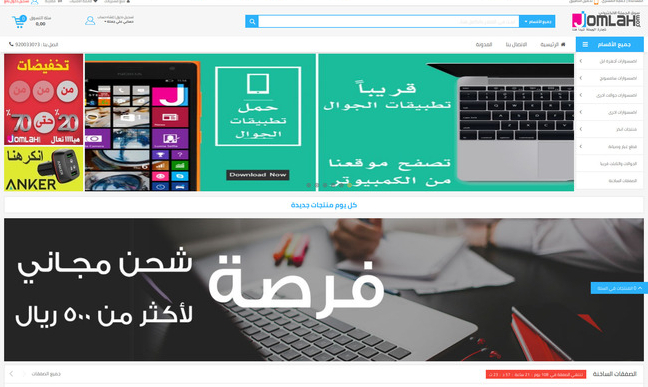
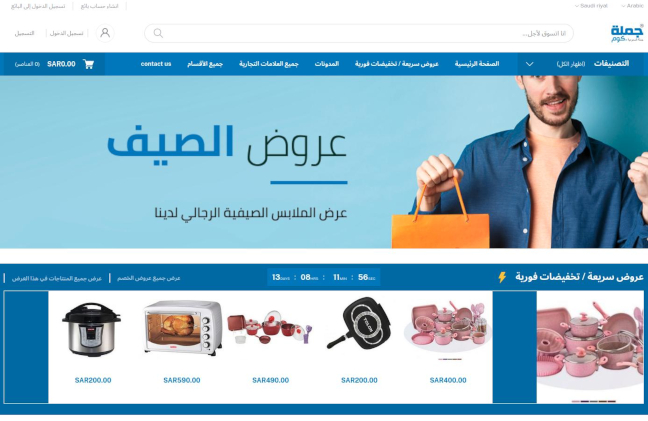
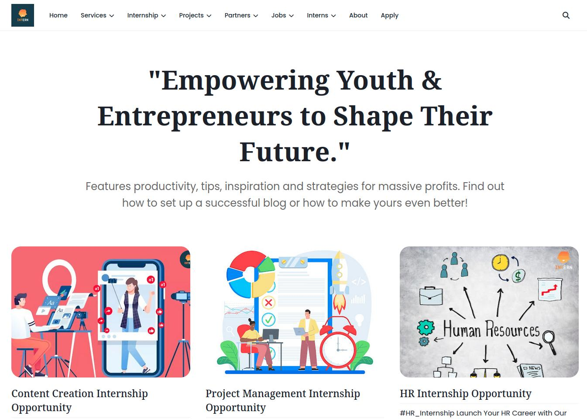
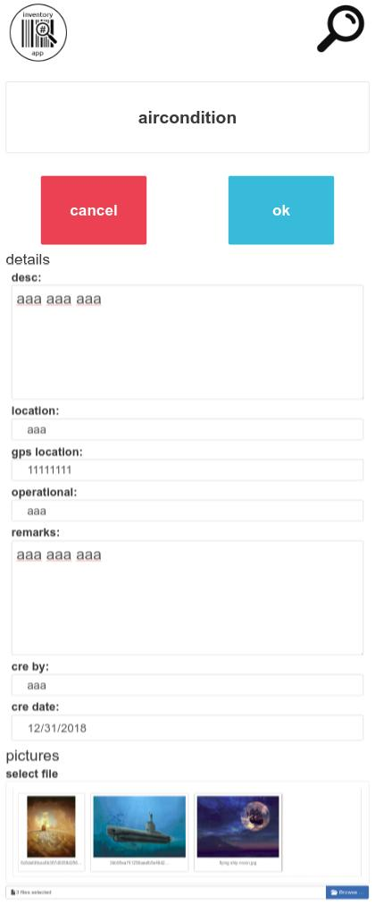
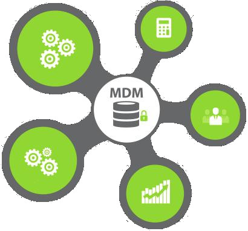
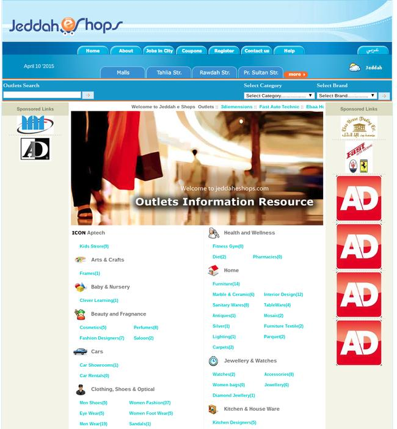
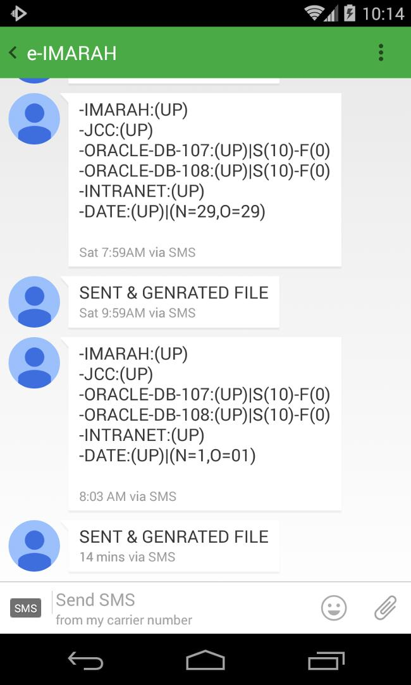
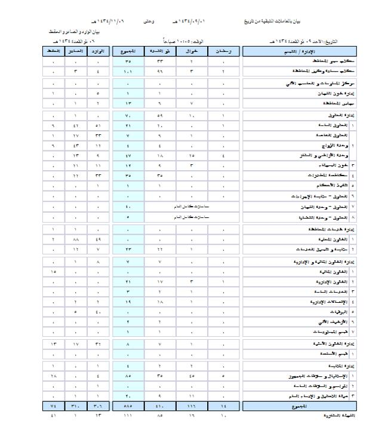

Saleh ElGaberty - صالح الجبرتي
AI & Systems Advisor | مستشار الأنظمة والذكاء الاصطناعي
الاحتياجات الأصيلة (E ق 💎 T ص) Authentic Neeeds


AI & Systems Advisor | مستشار الأنظمة والذكاء الاصطناعي
الاحتياجات الأصيلة (E ق 💎 T ص) Authentic Neeeds
Major Challenges I Successfully Delivered | أبرز التحديات التي أنجزتها بنجاح


بصفتي المدير التقني (CTO) لشركة تعمل في مجال التجارة الإلكترونية، أدركت منذ البداية أن اختيار منصة Magento كأساس للنظام كان قرارًا غير موفق استراتيجيًا. ومع مرور الوقت، تأكد ذلك عندما واجهنا تحديات مستمرة في الصيانة والتخصيص والتوسع، مما أثبت أن Magento لم يعد قادرًا على تلبية متطلبات التشغيل.
لمعالجة هذه المشكلة، توليت دور المستشار التقني لتحليل التحديات وتحديد مسار واضح للمضي قدمًا. وبعد مناقشات مفصلة مع الإدارة، اقترحت خيارين استراتيجيين: إما إعادة بناء المنصة بالكامل من الصفر أو اعتماد حل سوق إلكتروني جاهز ومُجرَّب.
ومن خلال بحث مركز، حددت شركة كانت قد طوّرت بالفعل منصة مشابهة تم بناؤها بشكل مستقل بنسبة لا تقل عن 80% مع اعتماد محدود على الأُطر الخارجية. وبعد إجراء تقييم تقني دقيق، أبرمنا اتفاقًا معهم وبدأنا عملية إعادة التطوير.
أدى هذا القرار إلى إعادة بناء المنصة بسرعة وبتكلفة منخفضة، مما نتج عنه نظام قوي وقابل للتوسع وذو كفاءة عالية، يتماشى مع استراتيجية النمو طويلة المدى للشركة.
As the Chief Technology Officer (CTO) of an e-commerce marketplace company, I recognized early on that choosing Magento as the core platform was a strategic mistake. Over time, this became evident as we encountered persistent maintenance, customization, and scalability challenges — confirming that Magento could no longer support our operational demands.
To address this, I stepped in as a technical consultant to assess the issues and define a clear way forward. After detailed discussions with leadership, I proposed two strategic options: rebuild the platform from scratch or adopt a proven marketplace solution.
Through focused research, I identified a company that had already developed a similar platform — independently built by at least 80% with minimal reliance on external frameworks. After a thorough technical evaluation, we finalized an agreement and began redevelopment.
This decision allowed us to rebuild the marketplace rapidly and cost-effectively, achieving a robust, scalable, and efficient platform that aligned with the company's long-term growth strategy.

كان الهدف الأساسي هو إنشاء بيئة مبتكرة تمكّن المتدربين من المشاركة الفاعلة في مشروعات البرمجيات مفتوحة المصدر، مما يساعدهم على اكتساب خبرة مهنية قيّمة أثناء الإسهام بشكل مؤثر في مجتمع المصادر المفتوحة العالمي.
لتحقيق هذه الرؤية، انضممت إلى شركة ناشئة جديدة مكرّسة لإطلاق عدة مشاريع تقنية. كان دوري محوريًا في تأسيس وتنظيم البنية التحتية التقنية الكاملة للشركة.
وكان من أبرز ما يميز هذه المبادرة التزامها بنشر جميع المشاريع التي يطورها المتدربون تحت رخصة مفتوحة المصدر. ولأجل ذلك، أنشأت رخصة مخصصة سُمّيت OPL (Open Projects License)، صُممت خصيصًا لدعم التطوير المفتوح والتعاوني.
تتيح رخصة OPL للمطورين إعادة استخدام المشاريع، وتوسيعها، وتعديلها، وإعادة توزيعها بحرية دون أي قيود قانونية أو مشكلات متعلقة بحقوق الملكية الفكرية، مما يضمن المرونة ويشجع الابتكار.
ومن خلال هذا الإطار، أنشأنا نظامًا مستدامًا يُمكّن المتدربين من بناء ملفات مهنية قوية، والمساهمة في مشاريع ناشئة مؤثرة، والتفاعل مع مجتمع المصادر المفتوحة — مكتسبين الخبرة ومقدمين في الوقت ذاته قيمة مضافة من خلال مساهماتهم.
The initial goal was to build an innovative environment where interns could actively contribute to open-source software projects, gaining valuable professional experience while making meaningful contributions to the global open-source community.
To bring this vision to life, I joined a newly established startup dedicated to launching multiple technology ventures. My role was pivotal in defining and organizing all technical infrastructure aspects of the business.
One of the core distinctions of this initiative was its commitment to releasing every project developed by interns under an open-source license. To support this, I created a custom license called OPL (Open Projects License), specifically designed for open, collaborative development.
The OPL license enables developers to reuse, extend, modify, and redistribute projects freely without facing legal or copyright barriers, ensuring flexibility and innovation.
Through this framework, we established a sustainable ecosystem where interns can build strong portfolios, contribute to high-impact startups, and engage with the open-source community — gaining experience while giving back through meaningful contributions.

تم تطوير نظام ويب متقدم لإدارة المخزون يندمج بشكل مباشر مع قاعدة بيانات الـERP الموجودة في المؤسسة، مما ألغى فصل البيانات والحاجة إلى المزامنة اليدوية. يقوم النظام بتحليل هيكل قاعدة البيانات وفهم أنماط البيانات والعلاقات المعقدة بشكل ذكي، ويولد تلقائياً جميع نماذج وحقول إدخال البيانات اللازمة، مما يمكّن مفتشي المخزون من تسجيل البيانات اللحظية مباشرة في الـERP دون أي نقل أو مطابقة يدوية.
يتميز النظام ببناء واجهة المخزون كـFrontend ويب متصل مباشرة بقاعدة بيانات الـERP، ما يحقق تكاملاً سلساً للبيانات ورؤية لحظية للمخزون بدون الحاجة لاستخدام تطبيق منفصل لإدارة المخزون. تم بناء النظام باستخدام تقنيات ويب حديثة بالكامل، مما يضمن الوصول إليه من أي جهاز، بما في ذلك الهواتف المحمولة، الأجهزة اللوحية، وأجهزة الكمبيوتر المكتبية، لتمكين فرق العمل الميدانية من العمل بكفاءة في الوقت الفعلي.
هذا التصميم ساهم بشكل كبير في تحسين دقة المخزون، تقليل زمن إدخال البيانات، وتمكين الإدارة من اتخاذ قرارات سريعة استناداً إلى بيانات المخزون اللحظية على مستوى المؤسسة بالكامل.
Created an advanced Inventory Web System that directly integrates with the enterprise's existing ERP Database, eliminating data silos and the need for manual synchronization. The system intelligently reads the database structure, analyzes and understands its complex data patterns and relationships.
The system automatically generates all necessary data entry forms and fields allowing inventory inspectors to record real-time inventory data directly into the ERP system without any manual transfer or reconciliation processes.
The innovative aspect of this system is that it eliminated the traditional need for a separate inventory tracking application. By building the inventory interface as a web-based frontend to the existing ERP database achieving seamless data integration and real-time visibility.
The system is built entirely on modern web technologies, making it fully accessible from any device including mobile phones, tablets, and desktop computers, allowing field teams to work efficiently from anywhere in real-time.
This approach significantly improved inventory accuracy, reduced data entry time, and enabled management to make faster decisions based on up-to-the-minute inventory information across the entire organization.

تم إنشاء نظام ويب متكامل لإدخال البيانات باستخدام PHP وHTML وCSS، والذي حسّن بشكل كبير طريقة إدارة المنظمة لعمليات البيانات الأساسية. تم تطوير النظام في نسختين، حيث تضمنت النسخة الأولى تصميم هيكل قاعدة بيانات كامل، وتنفيذ نظام مصادقة المستخدمين والتحكم في الوصول بناءً على الأدوار مع مستويات امتياز مختلفة، وتصميم نماذج إدخال البيانات وبناء قدرات تقارير شاملة مع توليد الرسوم البيانية البصرية لتحليل البيانات، مما مكن المديرين من اتخاذ قرارات مستنيرة بناءً على رؤى البيانات اللحظية، مع تحسين كل عنصر لأقصى قدر من الأداء والموثوقية وتجربة المستخدم لضمان سير العمليات اليومية بسلاسة.
أما النسخة الثانية فقد شملت إعادة هيكلة النماذج وفقاً للمتطلبات الجديدة، وإضافة تقارير أكثر تطوراً مع خيارات تصفية متقدمة، وإنشاء شاشة بحث متخصصة للمدفوعات لتحديث حالات المستفيدين بسرعة، وتطوير نظام مخصص للعثور على الشيكات وطباعتها مرتبط مباشرة بالطابعات العادية لطباعة الشيكات على الشيكات البنكية الفعلية، مع ميزة تصدير PDF التي ساهمت في تسهيل العمل الميداني وتحسين دقة البيانات أثناء عمليات التحقق، مما أسهم في تحقيق أتمتة كاملة للعمليات التي كانت يدوية سابقاً وتقليل الأخطاء البشرية بشكل كبير وتحسين كفاءة العمليات عبر جميع الأقسام.
Created a comprehensive Data Entry Web System using Native PHP & HTML, CSS that revolutionized how the organization managed their core data operations. The system was developed in 2 versions with the first version architecting a complete database schema, implementing user authentication and role-based access control with privilege levels, designing data entry forms. The first version included building comprehensive reporting capabilities with visual chart generation for data analysis, allowing managers to make informed decisions based on real-time data insights. Every element was optimized for performance, reliability, and user experience to ensure smooth daily operations.
In the Second Version, I significantly enhanced the system by refactoring the forms based on the new requirments, adding more sophisticated reports with advanced filtering options, creating a specialized Payment Search Screen that allowed staff to quickly update payment statuses for benificeries.
Developed a dedicated Cheque Find and Print System that integrated directly with normal printers to print cheques on actual bank cheques. The PDF export feature streamlined field work and improved data accuracy during field validations across the organization operations.
This comprehensive solution enabled the organization to achieve complete automation of previously manual processes, significantly reducing human errors and improving operational efficiency across all departments.

تم تطوير منصة إعلانات تجارية مخصصة للمحلات وفروعها المتعددة، تم بناؤها بالكامل من الصفر بهيكل Frontend وBackend متكامل باستخدام PHP وHTML وCSS دون الاعتماد على أطر عمل جاهزة. توفر المنصة حلاً متكاملاً للترويج للمحلات والعروض الترويجية الخاصة بها، من خلال إنشاء منظومة سوق رقمية متكاملة موجهة لمنطقة جدة، تربط بين الأنشطة التجارية الموثوقة والجمهور المحلي المستهدف.
تتميز المنصة بوجود لوحة تحكم إدارية قوية تتيح للمسؤولين إدارة جميع بيانات المحلات والفروع بكفاءة، وتحديث معلومات الأنشطة التجارية، وتنظيم الفروع ضمن فئات وهيكلية واضحة لتسهيل التصفح والاكتشاف. يضمن هذا النظام الإداري الموحد تجربة سلسة للعملاء أثناء استكشافهم للأعمال في منطقتهم.
وقد حظي المشروع باهتمام واسع في وسائل الإعلام المحلية، حيث تم نشره في صحيفة Arab News تقديراً لدوره المبتكر في تطوير وتحسين التجارة الرقمية المحلية.
Developed an Advertising Marketplace platform designed for shops and their multiple outlets, built entirely from the ground up with a complete Frontend and Backend architecture using Native PHP, HTML, and CSS. The platform provides a comprehensive solution for promoting retail outlets and special promotions, creating a digital marketplace ecosystem for the Jeddah region that connects verified businesses with the local audience.
It features a powerful Admin Dashboard that allows administrators to efficiently manage all shop and outlet data, update business information, and organize outlets into structured categories for easier navigation and discovery. This unified management system ensures a seamless experience for customers exploring businesses within their area.
The project received notable recognition in local media, being featured in the Arab News newspaper for its innovative role in advancing local digital commerce.

تم تطوير نظام مراقبة آلي بالكامل لمتابعة حالة تشغيل الخوادم والخدمات بشكل مستمر عبر بنية المؤسسة التحتية. يعتمد النظام على Bash لأتمتة العمليات الخلفية، وPHP لمعالجة البيانات وإعداد التقارير، مع دعم خدمة الرسائل القصيرة (SMS) لتوفير إشعارات فورية. يقوم النظام بإجراء فحوصات مجدولة على جميع الخوادم والخدمات الحيوية للتحقق من مدى توفرها واستجابتها في الوقت الفعلي.
عند اكتشاف أي انقطاع في الخدمة، يقوم النظام بإرسال تنبيهات فورية عبر الرسائل القصيرة تحتوي على معلومات تفصيلية حول الخادم أو الخدمة المتأثرة، مما يمكّن فرق الإدارة والدعم الفني من الاستجابة السريعة من أي موقع. بالإضافة إلى ذلك، يتم إصدار تقارير يومية ملخصة تُرسل تلقائيًا عبر الرسائل القصيرة لتوفير رؤية مستمرة حول أداء واستقرار البنية التحتية.
يضمن هذا النظام توفرًا عاليًا للخدمات، ويقلل من فترات التوقف، ويساعد في اكتشاف المشكلات ومعالجتها قبل أن تؤثر على سير العمليات أو العملاء.
Engineered a fully automated monitoring system for continuous tracking of servers and services uptime across the organization's infrastructure. The system is built using Bash scripting for backend automation, PHP for processing and reporting, and SMS integration for instant notifications. It performs scheduled health checks on all critical servers and services, verifying their availability and responsiveness in real time.
When any downtime is detected, the system sends immediate SMS alerts with detailed information about the affected server or service, enabling rapid response by management and technical teams from any location. Additionally, daily summary reports are automatically generated and delivered via SMS, providing a continuous overview of infrastructure performance and reliability.
This system ensures high service availability, minimizes downtime, and allows issues to be detected and resolved before they affect business operations or customers.

تم تصميم وتنفيذ نظام آلي لتقارير العمل اليومي للأقسام يقوم بإنشاء التقارير في أوقات دقيقة يتم تحديدها وفقاً لمتطلبات المؤسسة. على عكس التقارير اليدوية المعتمدة على Excel والمعرضة للأخطاء، يوفر هذا الحل واجهة ويب متكاملة تقوم بأتمتة عملية إنشاء التقارير وتقديم بيانات دقيقة وموثوقة للإدارة دون الحاجة لتثبيت أي برامج إضافية.
يتيح النظام الوصول الفوري إلى مؤشرات العمل اليومي، كما يمكن المستخدمين من مراجعة التقارير السابقة للأيام والأسابيع والأشهر الماضية بغرض التحليل والمقارنة في الأداء. كما يحتفظ النظام بأرشيف كامل لجميع التقارير لضمان تتبع شامل لأداء الأقسام على مدى الزمن.
تم بناء النظام باستخدام Bash لأتمتة العمليات، وCron للجدولة الزمنية الدقيقة، وPHP وHTML وCSS لتطوير واجهة ويب تفاعلية وسريعة الاستجابة، مما يجعل النظام فعالاً في تحسين كفاءة التقارير ورفع مستوى الأداء التنظيمي.
Designed and implemented an Automated Daily Department Workload Reporting System that generates reports at precise times defined by organizational requirements. Unlike manual, error-prone Excel reporting, this web-based solution automates report generation and provides consistent, reliable data for management without requiring any software installation.
The system offers real-time access to daily workload metrics and allows users to review historical reports from previous days, weeks, and months for analysis and performance comparison. It also maintains a complete report archive, ensuring full traceability of departmental performance over time.
Built using Bash scripting for automation, Cron for time scheduling, and PHP, HTML, and CSS for a responsive web interface, the solution streamlines reporting and enhances organizational efficiency.
واجهت تحديًا تقنيًا عندما احتاجت المؤسسة إلى نشر تطبيق ويب حديث مبني على Node.js على خادم VPS مُدار عبر cPanel، والذي لم يكن يدعم Node.js بشكل افتراضي.
بدلًا من ترقية البنية التحتية، قمت بتنفيذ حل على مستوى النظام باستخدام صلاحيات الجذر (Root Access) لتثبيت بيئة تشغيل Node.js يدويًا وإعداد جميع المكتبات والاعتمادات اللازمة. بعد ذلك، قمت بتهيئة خادم الويب Apache لدعم تحويل المنافذ (Port Forwarding) وإعداد الوكيل العكسي (Proxy Routing) لتمكين التكامل السلس مع نطاق المشروع.
ولضمان الاستقرار التشغيلي، طورت سكريبت مراقبة يعتمد على Bash يقوم بإعادة تشغيل عملية Node.js تلقائيًا في حال حدوث تعطل أو توقف في الاستجابة.
مكن هذا الحل المؤسسة من تشغيل تطبيقات Node.js الحديثة على البنية التحتية الحالية بكفاءة عالية واستقرار تام، دون الحاجة إلى ترقية مكلفة للخوادم.
Faced a technical challenge when the organization needed to deploy a modern Node.js web application on a VPS server managed with cPanel, which lacked native Node.js support.
Instead of upgrading infrastructure, I implemented a system-level solution using root access to manually install the Node.js runtime and configure all required dependencies. I then optimized the Apache HTTP server for port forwarding and proxy routing, enabling seamless domain-level integration.
To ensure reliability, I built a Bash-based monitoring script that automatically restarts the Node.js process if it crashes or becomes unresponsive.
This solution allowed the organization to run modern Node.js applications on existing infrastructure with full stability and no costly upgrades.